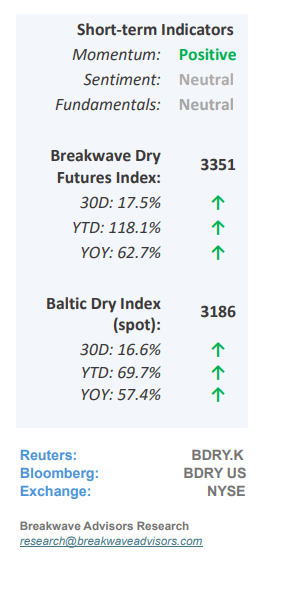
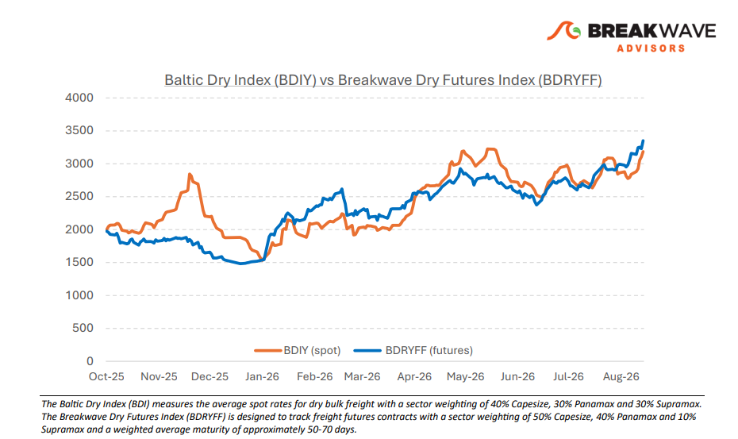
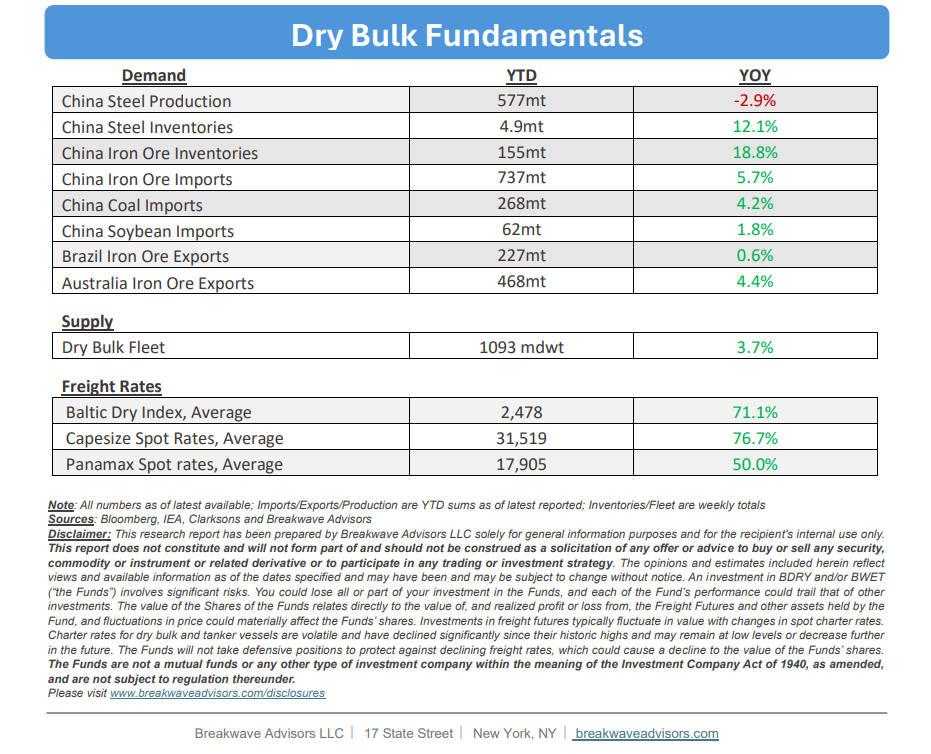

•Steady Demand and Shrinking Vessel Supply Pushes Spot Higher– During the second half of August,robust iron ore transportation demandin the Pacific, driven by all three mining majors, combined with localized storm disruptions thattightened vessel lineupsled to elevated freight rates on the critical Australia-to-China route. Concurrently, a constricted Atlantic tonnage listpushed spot rates upwarddespite softer regional demand, positioning the market advantageously from a higher absolute baseline as it transitions out of the historically quiet summer August month and into the seasonally strong autumn period. Additionally,metallurgical coal import demandjumped, following a major accident in China with traders scrambling to secure tonnage of medium-size bulkers. While other maritime segments like tankers and containers are earning significantly higher daily rates, this parallel successhas bolstered shipowner sentimentdespite any direct fundamental link amongst those segments, potentially amplifying upward spot rate pressure should an unexpected market tightening occur. Consequently, despite generally flat underlying fundamentals in our view, thenear-term outlookfor spot Capesize ratesremains highly optimistic,sustained by a volatile global logistics landscape that continues to drive exceptional volatility and historic performance across the broader shipping industry during a year for global shipping that will be remembered for decades to come.

•Iron Ore follows Coking Coal Higher Amidst the Worst Disaster since 2009–Coking coal,the second most important ingredient in the steelmaking process, delivered anunprecedented, record-breaking performance, surging over 40% within the month after a catastrophic mining accident in Shanxi triggered nationwide safety inspections and sweeping production curtailments across China. While iron ore prices experienced a modest, low-single-digit sympathy increase, the steelmaking raw material complex faces shifting dynamics; forward-looking projections indicate ample iron ore supply, yet escalating input costs from both metallurgical coal and ocean freight areactively compressing steel mill marginsto multi-year lows. Consequently, these severe margin pressures are likely to trigger downward adjustments in steel production, subsequently curtailing downstream demand for iron ore in the near term.
•Our Long-term View– The last few years have been characterized by increased geopolitical uncertainty. Going forward, we expect such events to continue to affect global trade and have a meaningful impact on effective vessel supply. Combined with the potential for a multi-year cyclical rebound in China’s economic activity following the recent economic turmoil, dry bulk shipping should experience higher volatility on top of a secular tightness driven by stable bulk commodity demand and rather steady but elevated fleet growth.


Subscribe: